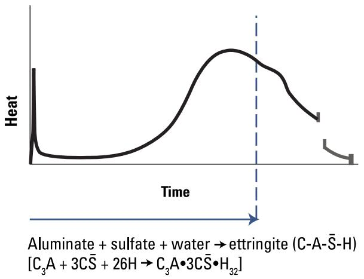
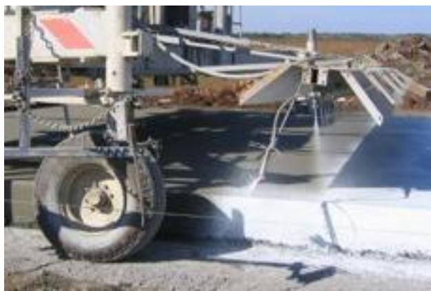
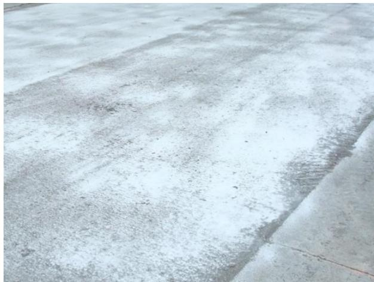

Moisture Management
Moisture management in concrete is a comprehensive practice that controls water movement, retention, and temperature during both the early curing phase and long-term service to ensure structural integrity and durability. During the initial curing period, methods such as wet coverings, evaporation retarders, and insulating blankets are employed to retain internal moisture and heat, thereby facilitating complete cement hydration while minimizing plastic shrinkage cracking and surface defects [1] [3] [4]. In the long term, management focuses on limiting the ingress of liquid water and deleterious chemicals through joint design, drainage, and hydrophobic sealers, while simultaneously allowing internal vapor to escape to prevent pressure buildup [2] [4]. By maintaining moisture levels below critical saturation thresholds and utilizing air-void systems or breathable barriers, the material is protected from hydraulic pressures generated by freeze-thaw cycles and chemical degradation [2] [4].
Sources (4)
Key findings
- Prompt application of curing compounds immediately after bleeding ceases seals the surface to slow evaporation below the rate of internal water movement, allowing hydration to continue for seven or more days [1] [3] [4].
- Full and uniform coverage of curing compounds is essential, as even small pinholes raise evaporation rates and compromise moisture retention [1] [3].
- Penetrating hydrophobic sealers form a barrier within concrete pores that markedly reduces moisture and deicing chemical ingress, extending the time before critical saturation is reached [2] [4].
- Excess moisture that raises concrete saturation to a critical level (approximately 85% of void space) triggers freeze-thaw damage after even a single cycle, particularly when deicing salts are present [2].
- Proper curing with liquid membrane-forming compounds limits water evaporation significantly compared to unprotected concrete, leading to higher strength, lower permeability, and improved durability [1].
- Solvent-based curing compounds provided more effective water retention than water-based alternatives by wetting the surface uniformly and creating fewer imperfections [4].
- Variability in air-void content dramatically shortens predicted service life by increasing the risk of reaching critical saturation levels prematurely [2].
Moisture State Control and Curing Dynamics
Moisture state control during early-age concrete curing involves managing water retention and temperature to ensure continuous cement hydration, which is essential for developing strength and minimizing shrinkage-related defects [1] [3]. The underlying mechanism relies on maintaining internal humidity by preventing surface evaporation rates from exceeding the upward migration of bleed water, thereby allowing hydration products to refine pore structure and lower permeability [1]. Effective curing dynamics require balancing moisture retention with vapor diffusion to prevent excessive saturation that could lead to internal stresses during freeze-thaw cycles or chemical ingress later in the material’s service life [2] [4].
The following figure illustrates how specific chemical reactions contribute to the thermal behavior associated with this hydration process.

Heat evolution curve of cement hydration showing the initial reaction, dormant period, and subsequent acceleration. [1]The figure displays a plot of heat generation over time, characterized by an initial sharp spike followed by a prolonged period of low activity known as the dormant period. This phase is caused by the formation of ettringite (C-A-S¯-H), which coats aluminate grains and limits water access, thereby slowing further reactions. This chemical mechanism is critical for moisture management because it extends the time during which concrete remains plastic, facilitating placement before the rapid heat generation and stiffening associated with hydration.
Research problem — Uncontrolled moisture movement in fresh concrete, including rapid surface evaporation and excessive bleed water, creates premature drying that leads to plastic and shrinkage cracking while undermining long-term durability [1]. Inconsistent application of curing agents results in non-uniform hydration and weak surface layers that are highly vulnerable to traffic-induced distress and early failure [4]. Uncontrolled moisture accumulation within pavement joints reaches critical saturation levels that trigger aggressive chemical reactions and freeze-thaw damage, causing premature joint deterioration even in air-entrained concrete [2].
State of the art — The industry standard for moisture state control relies on spray-applied liquid membrane-forming curing compounds, typically poly-alpha-methylstyrene or wax-based formulations, which are applied to seal the surface and sustain hydration by preventing evaporation rates from exceeding internal water migration [1] [3]. Current practice integrates these membranes with environmental controls such as fog spraying for humidity maintenance in hot conditions and insulating blankets for thermal protection in cold climates, all executed under strict adherence to ASTM C309 performance criteria and agency-specific application rates [1] [2] [3]. The prevailing consensus emphasizes a coordinated strategy that combines early-age moisture retention with long-term surface protection using penetrating silane or siloxane sealers to create hydrophobic barriers, thereby managing the degree of saturation and mitigating damage from de-icing salts [2] [4].
The following figure illustrates the equipment used for applying these curing compounds.

Application of curing compound using a specialized cart and spray nozzles on fresh concrete pavement. [3]The image displays a mechanical cart equipped with large tires and an articulated boom, which is actively spraying a white liquid membrane onto the surface of freshly placed concrete. By forming a barrier against moisture loss, this equipment facilitates the complete cement hydration required for structural integrity.
Findings from the reports
- Prompt application of liquid membrane-forming curing compounds immediately after bleeding ceases limits water evaporation to approximately 20 percent of unprotected concrete, thereby sustaining hydration and enhancing strength and durability [1] [3] [4].
- Uniform coverage of curing compounds is essential for effective moisture retention, as even small pinholes significantly increase evaporation rates and compromise the seal [1] [3].
- Penetrating hydrophobic sealers, particularly silane formulations, markedly reduced moisture and de-icing chemical ingress while maintaining vapor permeability within concrete pores [2] [4].
- Solvent-based curing compounds demonstrated superior water retention compared to water-based alternatives by wetting the surface more uniformly and creating fewer imperfections [4].
- Air entrainment lowers the initial degree of saturation in concrete, delaying the time required for the material to reach critical saturation levels that trigger freeze-thaw damage [2].
- High variability in air-void content dramatically shortened predicted service life by accelerating the rate at which concrete reached critical saturation thresholds [2].
- Excess moisture that raises the degree of saturation to approximately 85 percent of void space triggers freeze-thaw damage after even a single cycle, especially in the presence of de-icing salts [2].
Novelty & rigor — The approach introduces a dual-layer strategy that combines solvent-based poly-alpha-methylstyrene curing compounds for immediate, consistent moisture retention with penetrating silane or siloxane sealers to create a breathable hydrophobic barrier against long-term liquid water ingress [4]. Operational reproducibility is enhanced by an automated cart system that provides real-time monitoring and automatic adjustment of spraying parameters, ensuring uniform film application across all exposed faces including vertical edges [3]. A probabilistic sorption model coupled with Monte Carlo simulation explicitly links mixture variability to the time required to reach critical saturation, allowing for predictive control of moisture conditions rather than relying solely on static curing protocols [2].
The following figure illustrates how variations in water-to-cement ratio and air volume affect the time required for concrete to reach critical saturation.
 Probabilistic analysis of the time required for concrete to reach critical saturation under varying mixture parameters. [2]
Probabilistic analysis of the time required for concrete to reach critical saturation under varying mixture parameters. [2]
The figure plots the relationship between probability of failure and the time required for a portion of the concrete to reach critical saturation, comparing deterministic predictions against probabilistic models with different air void contents.
Reported values
| Parameter | Value | Context | Source |
|---|---|---|---|
| application rate | 100 ft²/gal | thin overlays | [1] |
| application rate | 200 ft²/gal | normal paving applications | [1] |
| silt particle size | 0.0002 to 0.002 in. | low-plasticity, fine-grained soils sensitive to frost heave | [1] |
| traffic protection duration | 72 hours | keep traffic and construction equipment off the pavement | [1] |
| water evaporation rate | 20 percent% | liquid membrane-forming curing compound when properly applied | [1] |
| aggregate top size | 1 in. | concrete with an aggregate top size of 1 in., severe exposure | [2] |
| air content | 6 percent | concrete with an aggregate top size of 1 in., severe exposure | [2] |
| air content variability | 5 to 15 to 25 percent COV | higher variability in air content | [2] |
| critical degree of saturation | 85 percent | examined mix (Figure 2-1) | [2] |
| critical degree of saturation (void space) | 85 to 88 percent | void space in concrete critically saturated | [2] |
| time of failure | 13.8 years | higher variability in air content (5 to 15 to 25 percent COV) | [2] |
| time of failure | 17.2 years | higher variability in air content (5 to 15 to 25 percent COV) | [2] |
| time of failure | 7.9 years | higher variability in air content (5 to 15 to 25 percent COV) | [2] |
| time to failure at 15% COV air content variability | 13.8 years | concrete with 15 percent COV in air content | [2] |
| time to failure at 25% COV air content variability | 7.9 years | concrete with 25 percent COV in air content | [2] |
1 more distinct value omitted here; the full span-verified set is in the quantities sidecar.
Across the reviewed reports, effective moisture state control during curing requires immediate application of liquid membrane-forming compounds to seal the surface and sustain hydration, a practice that collectively prevents premature water loss and ensures uniform coverage. While curing compounds primarily manage evaporation to support strength development, long-term moisture state control also depends on maintaining the concrete’s degree of saturation below a critical threshold (approximately 85%) through air entrainment and hydrophobic barriers to mitigate freeze-thaw damage. The collective evidence indicates that both curing dynamics and long-term durability are compromised by high variability in material properties or application quality, necessitating tight control over air-void consistency and uniform compound coverage to prevent rapid saturation and structural deterioration. [1] [2] [3] [4]
The following figure illustrates how variations in application quality directly impact the uniformity of curing compounds.

Visual comparison of curing compound application quality on a concrete surface. [3]The image displays a close-up view of a concrete slab exhibiting significant mottling, characterized by irregular patches of lighter and darker gray areas across the surface texture.
Implications — Specifications must mandate prompt, uniform application of verified curing compounds immediately after bleed water disappears to ensure complete surface saturation and prevent plastic shrinkage cracking [1] [3] [4]. Designers should specify low permeability mixes with adequate air entrainment and reliable joint drainage systems to maintain the degree of saturation below critical thresholds that trigger freeze-thaw damage [2]. Practice must incorporate supplemental hydrophobic sealers and strict temperature controls during curing to protect against moisture ingress, deicer attack, and thermal gradients that induce premature distress [1] [4].
The following figure illustrates how the degree of saturation influences stiffness degradation resulting from freeze-thaw damage.
 Influence of the degree of saturation on relative stiffness degradation due to freeze-thaw damage. [2]
Influence of the degree of saturation on relative stiffness degradation due to freeze-thaw damage. [2]
Once this critical degree of saturation is exceeded, freeze-thaw damage initiates and causes significant degradation in relative stiffness.
Limitations — Moisture management through curing cannot compensate for poor concrete placement or mixture quality, and its success depends entirely on correct timing, application rates, and equipment calibration [3]. The effectiveness of membrane-forming compounds and evaporative retardants varies significantly with ambient conditions and application methods, while insulation blankets may inadvertently cause cracking if removed during large temperature differentials [1] [3] [4]. Long-term durability of surface sealers remains uncertain due to rapid field degradation, and predictive models often rely on assumptions of continuous water contact that do not reflect typical drying conditions [2] [4].
Evidence: 4 reports (4 primary)
Related concepts
In this hierarchy
- Parent: Cracking Mitigation
- Sibling: Concrete Cracking
- Sibling: Sealant Application
- Sibling: Temperature Management
Related by shared evidence
- Aggregate Management — shares 4 reports
- Cement Chemistry — shares 4 reports
- Cementitious Materials — shares 4 reports
- Concrete Mixture Design — shares 4 reports
- Concrete Production — shares 4 reports
- Concrete Testing — shares 4 reports
- Cracking Mitigation — shares 4 reports
- Joint Maintenance — shares 4 reports
Similar topics
- Cracking Mitigation
- Cement Chemistry
- Concrete Durability
- Concrete Cracking
- Temperature Management
- Concrete Durability
- Maturity Methods
- Concrete Testing
Source coverage
| Source | Moisture State Control and Curing Dynamics |
|---|---|
| [1] | ✓ |
| [2] | ✓ |
| [3] | ✓ |
| [4] | ✓ |
References
- Integrated Materials and Construction Practices for Concrete Pavement: A STATE-OF-THE-PRACTICE MANUAL (2019)
- Guide to the Prevention and Restoration of Early Joint Deterioration inConcrete Pavements (2016)
- Best Practices Manual: Quality Control and Quality Acceptance of Concrete Airport Pavement (2025)
- Concrete Pavement Preservation Guide (Third Edition) (2022)
Feedback on this page